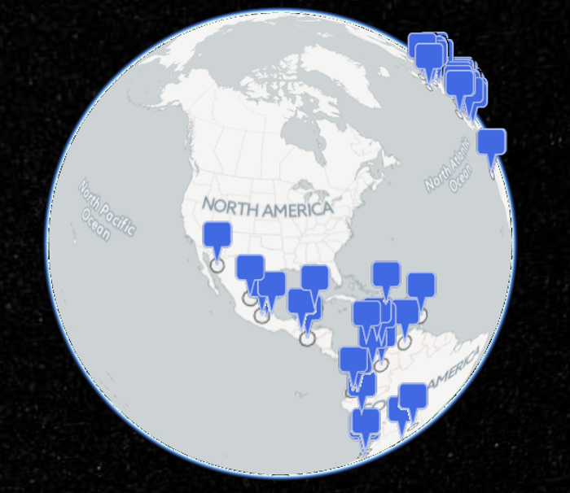
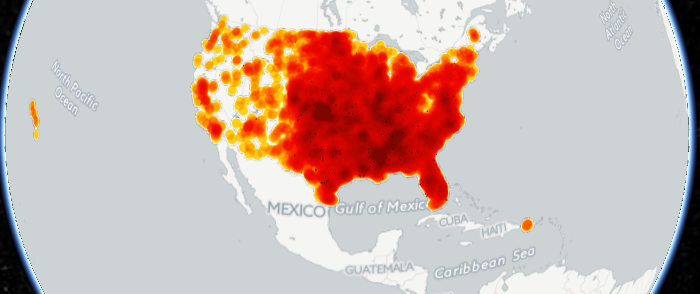
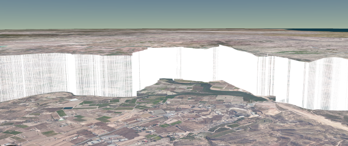

CartoDB integration with Cesium (examples)
These are a few basic examples of what can be achieved with CartoDB and Cesium.
Some of these examples use CartoDB's Cesium plugin to integrate CartoDB tile layers in Cesium.
Simple (click here to view)
This example features Cesium with a CartoDB basemap, a CartoDB tile layer and a data layer (same data as the tile layer) drawn with Cesium.

Tornados (click here to view)
This example shows a CartoDB basemap and a CartoDB tile layer.

Elevation (click here to view)
This example shows a data layer from CartoDB rendered with Cesium. The data table has an extra column for elevation. which is used to set the height of the vertical lines.
